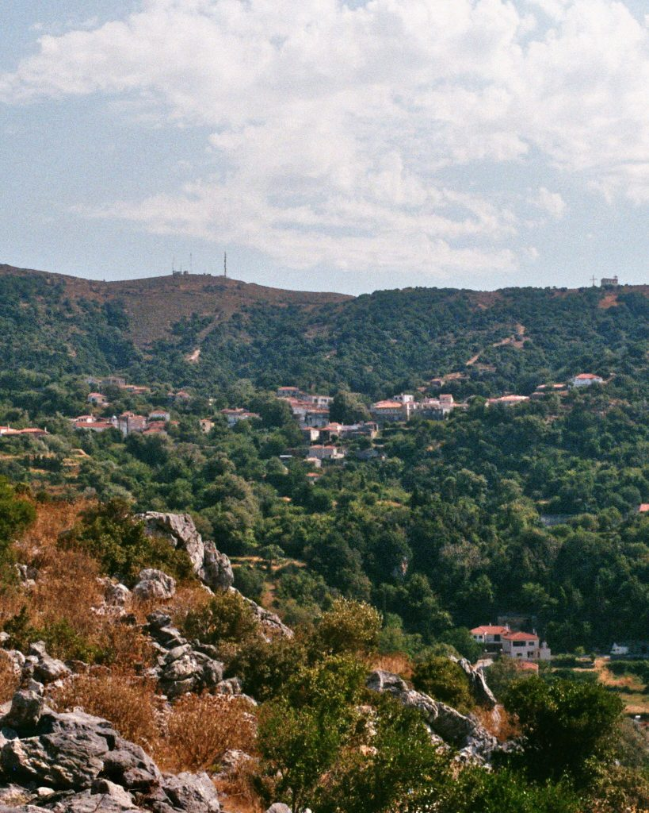

Εύβοια · Ελλάδα
Oktonia
[Kurze Einführung in das Dorf, seine Landschaft und das Leben vor Ort.]
Ort entdecken ↘
Orientierung
Das Dorf
auf einen Blick
Bildplatzhalter · Aktuell im Dorf
Aktuell im Dorf
00 / 0000
[Titel einer aktuellen Meldung oder Veranstaltung]
[Kurzer Teaser für Dorfnachrichten, Feste oder die neueste Ausgabe der Dorfzeitung.]
Zum Dorfleben →Geschichte & Erinnerung
Ein Ort,
viele Geschichten.
Historisches Bild / Dokument
[Ein kurzer Einstieg in die Geschichte Oktonias. Dieser Bereich kann später auf einen ausführlichen Beitrag oder eine Zeitleiste verweisen.]
Geschichte lesen →